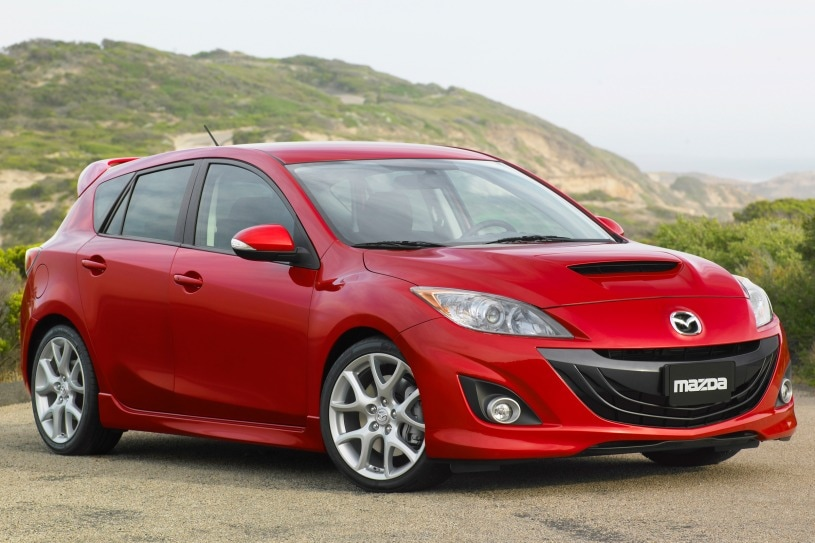

Bio
Reliable news
My name is Daniel Navia. I am 25 years old, and I am a senior entering my last semester at UHD. My computer science journey began after about 2 years at HCC after not being too sure what I wanted to do. My main area of interest lies on the automotive side of things. I have learned to take care of most basic maintenance on the family cars and have been able to avoid costly trips to the mechanic for the most part. Although a personal goal of mine is to learn about engine management and be able to set up a complete custom system by myself, I believe that learning to electrify older vehicles may also be interesting. Much of my time at UHD was spent being exposed to many different disciplines and technology that I had no idea existed that I feel I may need a bit of time after graduation to figure out which way I want to branch out. I am not even entirely sure if I will remain in Houston for too long after. One particular thing that has interested me recently is finding a way to turn compost into ethanol fuel, however there are many safety and legal issues to also consider.
Cars I've worked on successfully
| Make | Model | Year |
|---|---|---|
| Mitsubishi | Mirage | 1999 |
| Honda | Accord | 2001 |
| Honda | Prelude | 2001 |
| Toyota | Celica | 2002 |
| Chevrolet | Silverado | 2003 |
| Dodge | Grand Caravan | 2005 |
| Honda | Civic | 2007 |
| Dodge | Nitro | 2007 |
| Mercedes-Benz | C230 | 2007 |
| Chrysler | 300 | 2010 |
| Mazda | Mazdaspeed3 | 2010 |
| Kawasaki | Z125 | 2018 |
Cars that have my attention
- BMW E30 M3
- 1992-94 Lexus LS400
- Toyot Celcia GT-Four ST205
- Lotus Evora
- 2010-2013 Mazda Mazdaspeed3 
- 2016 Dodge Viper ACR
- Nissan 300ZX Z31 Turbo